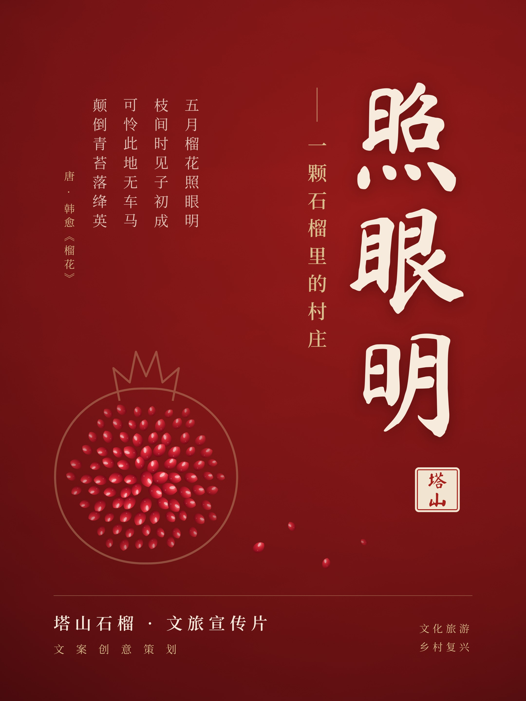
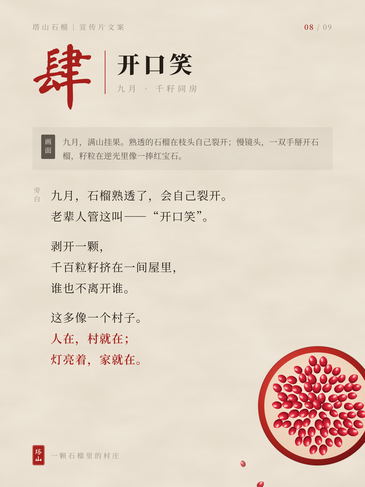
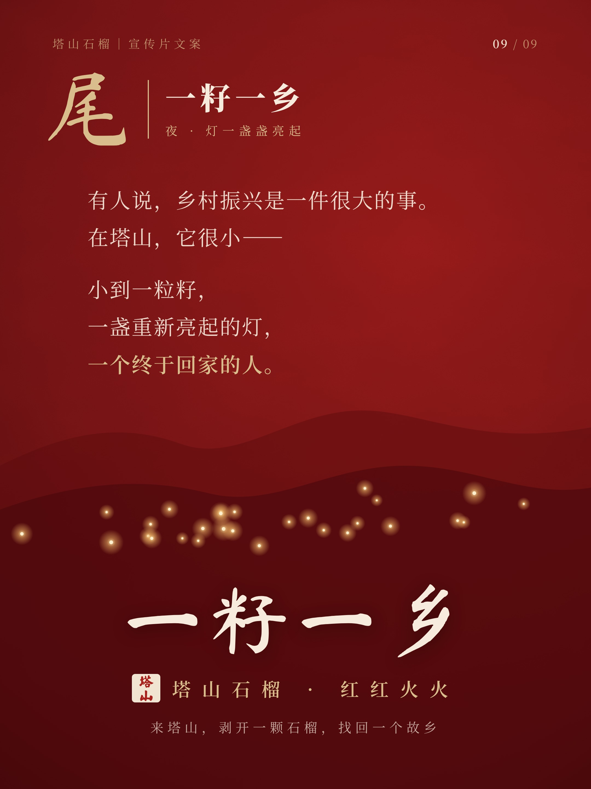

塔山石榴 · 文旅观察
10月3日夜里，青海祁连，零下4度。
这座常住人口5万出头的县城，一天之内涌进了超过10万名游客。
据新华社报道，全县400多家酒店民宿、2.3万张床位全部满房。县文体旅游广电局7个小时里，接到了400多个求助电话。
后来的事，你大概在热搜上看过了——
县里连夜腾出学校宿舍，当公益床位；
文旅局长冯玲玲，在零下4度的夜里，给游客一张一张地铺床。
全网都在说：太暖了。
也有人追问：那是学生的宿舍，学生同意了吗？
暖是真的。窘，也是真的。
我也被感动了。但感动完，我想说点扫兴的话。
一个县城，要靠局长亲手铺床、靠腾出学生宿舍，才接得住一个晚上的流量。它接住了一夜，可它准备好接住一年了吗？
01
县城火了。然后呢？
今年中秋连着国庆，“请3休13”，被不少人叫作史上最长的黄金周。
数据很漂亮。
文旅部数据中心测算，国庆7天，国内出游8.26亿人次，花费7383.75亿元；
县域旅行产品热度，同比涨了42%；
马蜂窝上，“奔县游”的搜索量环比暴涨238%；
飞猪上，预订古村类产品的用户，同比多了九成。
每一篇通稿都在说同一句话：县城火了。
可就在同一个假期，新华社的半程观察里，悄悄放了一句话：
有网友反映，部分县域文旅，“人流大，消费少”。
六个字，比所有数据都诚实。
人来了，拍完照，走了。
路上堵了三公里，饭馆的灶台没热几回；
朋友圈刷屏了，村里的账本，没厚几页。
有学者说得直白：不少县域过去只靠一张门票吃饭，产业链太短，自然留不住消费。
再说得狠一点——
流量是过路的风，吹过县城，不会为谁停留。
热搜给了县城一个夜晚，没给它一个未来。
热闹是游客的。冷清，才是县城自己的。
02
你去县城找的松弛感，是别人的“慢性失血”
我们为什么奔县？
因为累。
因为大城市的景区挤得像早高峰，因为身上的“班味”三天洗不掉，因为想找一个“没人认识我”的地方，喘口气。
于是县城成了解药：人少、物价低、节奏慢，晚上抬头能看见星星。
但你有没有想过——
县城为什么人少？因为年轻人走了。
县城为什么慢？因为没人赶时间了。
村子为什么那么安静？因为白天只剩老人，晚上只剩狗叫。
你眼里的岁月静好，很可能是别人的人去楼空。
我们用三天假期，消费了一座县城的“慢”；
而这份慢，是它用二十年的年轻人外流换来的。
这话很刺耳，但得承认：
我们奔向的那个县城，和我们逃离的那个县城，其实是同一个县城。
只不过，一个是别人的，一个是自己的。
03
一个村子，怎么接住流量？
说一个地方。
安徽淮北，烈山区，榴园村。

塔山石榴宣传片《照眼明》海报
这里的山是石灰岩山，土薄，风硬，偏偏长石榴。
据《烈山区志》记载，清代这里的石榴进过贡。直到今天，这一带还保存着千余亩明清古石榴园，百年以上的老树有八百多株，不少树身上挂着牌子：两百年，三百年，四百年。
可“有好东西”，从来不等于“有好日子”。
早些年，榴园村是个困难村。路不好走，销路不畅，再好的石榴也难卖上价。和很多村子一样，年轻人一茬一茬往外走。
一千二百年前，韩愈写榴花，有一句：
在榴园村，这句诗很长一段时间都是真的。
后来，变化是一点一点来的。
路修进了山，“龙脊天路”一弯一弯，把散在山里的村子串了起来；
村里建起了石榴博物馆，据说是国内第一座以石榴为主题的博物馆；
有果农把自家老屋改成民宿，推开窗，就是自家的石榴树；
今年5月，天路沿线的山顶机车营地也开了业。
我不想把它吹成爆款，也不打算给你报它今年接待了多少人次。
但它做对了一件事：
它没急着卖门票，而是先修路，先留人，先把日子过起来。
门票，赚的是“来一次”的钱；
民宿、果园、博物馆、营地，赚的是“住下来”的钱；
而真正能让一个村子活下去的，是第三种——
“回来”的人。
04
乡村振兴真正的KPI，不是游客人次
我们太习惯用一个数字衡量一个地方：多少人次，多少亿元，同比涨了多少。
但村子不是景区。
游客是来借住的，年轻人才是来过日子的。
游客要的是松弛感，村子要的是活下去。
一个村子，一年接待一百万游客，却留不住一个年轻人——那不叫振兴，叫“景区化”。
石榴有个特点。
剥开一颗，千百粒籽挤在一间屋里，谁也不离开谁。

千籽同房，谁也不离开谁
那你想想：如果一颗石榴，籽都跑光了，还剩下什么？
一层皮。
一个村子，年轻人都走光了，剩下的也只是一层皮。包装得再好看，也只是一座景区。
所以，别只问“今年来了多少游客”。
要问：
今年，有几个孩子回来了？
有几盏灯，是重新亮起来的？
那几棵几百岁的老树，还有没有人每天清早，上山给它培一捧土？
这些数字，上不了热搜。
但它们，才是一个村子真正的GDP。
05
这个国庆，你奔了谁的县？
最后，问你一个问题。
这个长假，你可能去了某个县城，住了某家民宿，拍了几张很出片的照片，发了一条“终于松弛了”的朋友圈。
挺好的，真的。
只是某个深夜，刷到老家消息的时候，你会不会也想起——
你自己的那个县城，上一次回去，是什么时候？
村口那棵树，还在吗？
那个在电话里永远说“家里都好”的人，今年秋天，是不是一个人把果子摘完的？
我们总在别人的故乡找松弛感，却把自己的故乡，留给了时间。
九月，淮北的石榴熟透了，会自己裂开。
老辈人管这叫——“开口笑”。
愿每一个村子，都等得到它的孩子回来，
陪它，笑一次。

一籽一乡
📍 如果你想去一个不只卖门票的地方：安徽淮北·烈山区·榴园村（龙脊天路沿线）。每年九十月，正是石榴季。
💬 这个国庆，你奔了谁的县？你老家的那个县城，现在怎么样了？留言区，聊聊。
数据来源：新华社、文化和旅游部数据中心，及马蜂窝、飞猪、同程、鼎游信息等平台公开数据；榴园村资料来自《烈山区志》及人民网、科技日报等公开报道。